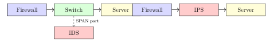

Chapter 9: Firewalls, IDS, and IPS¶
Intrusion detection and prevention systems (IDS/IPS) monitor network traffic and host activity to detect and respond to attacks in real time. This chapter covers deployment architectures, detection methods, rule syntax, and the SIEM and SOC infrastructure that ties everything together.
No firewall policy is perfect, and no ruleset anticipates every attacker technique. IDS and IPS exist because network defenders accept this reality: some traffic will reach the interior of a network, and the question is how fast the team detects and responds to it. The distinction between detection and prevention sounds like a product-marketing choice, but it reflects a genuine engineering trade-off about where to accept false positives in the detection pipeline.
9.1 IDS vs IPS Architecture¶
Definition 9.1 (IDS/IPS)
-
IDS (Intrusion Detection System): Monitors traffic, generates alerts, but does not block. Passive mode; inline or out-of-band (span/tap).
-
IPS (Intrusion Prevention System): Inline deployment; can block, drop, or reset traffic in real time. Adds latency but can prevent attacks.

9.1.1 Deployment Topology Decisions¶
The IDS-vs-IPS choice isn’t made once for an entire network; it’s made per segment, per traffic class, and per tolerance for both false positives and latency.
An out-of-band IDS deployment (tap or SPAN port) has zero impact on production traffic flow. If the IDS crashes or falls behind on packet processing, no legitimate traffic is dropped. This makes it the right choice for high-throughput links where availability is paramount — a 100 Gbps backbone that carries SLA-protected traffic simply can’t tolerate the risk of a software bug in the detection engine dropping packets. The trade-off is that the IDS can only alert, not block: by the time the analyst sees the alert and acts, the attack payload has already reached the destination. For fast-moving attacks like exploit delivery, a detection-only posture often means the attacker has already won by the time the team responds.
An inline IPS deployment interposes the detection engine in the traffic path, which means both blocking and additional latency. Typical software-based IPS engines add 1–5 ms per packet for full signature inspection; hardware-accelerated appliances (FPGA-based inspection in Palo Alto and Check Point gear) keep this below 100 µs at line rate. The latency cost matters enormously for trading systems and real-time industrial control networks, and it’s negligible for most enterprise web traffic. The failure mode also differs: a failing inline IPS either fails open (all traffic passes, losing blocking capability) or fails closed (all traffic drops, causing an outage). Fail-open is nearly universal in enterprise deployments because a security outage is less damaging than a production outage, but this means the IPS protection disappears exactly when the device is under stress — which is often when an attack is in progress.
A mature enterprise network typically deploys both: out-of-band IDS for high-throughput internal backbone links (detection only, comprehensive logging), inline IPS at internet ingress and egress (blocking known-bad signatures), and host-based IDS (HIDS) on critical servers (file integrity monitoring, process execution logging). The layers compensate for each other’s blind spots. Network IDS misses encrypted traffic and host-level activity; HIDS misses lateral movement between hosts; inline IPS at the perimeter misses attacker-controlled systems inside the network.
Network TAP vs. SPAN port: Both deliver a copy of traffic to an out-of-band sensor, but they differ in reliability. A TAP (test access point) is a passive optical or electrical device that physically splits the signal; it copies traffic even during switch CPU saturation and can’t drop packets. A SPAN port is a switch software feature that mirrors traffic, but during high load the switch prioritizes forwarding over SPAN copying — under a DDoS, the SPAN port may deliver 20% of the traffic the IDS expects to see. For forensic-quality capture, hardware TAPs are mandatory; for operational detection, SPAN is usually adequate.
9.2 Detection Methods¶
| Method | How | Pros | Cons |
|---|---|---|---|
| Signature-based | Match known attack patterns | Low false positives | Misses zero-days |
| Anomaly-based | Deviate from statistical baseline | Detects unknowns | High false positive rate |
| Behavioral | Patterns of behavior over time | Detects APT | Complex tuning |
| Heuristic | Rule-based logic beyond signatures | Flexible | Can be evaded |
Signature-based detection is fast and precise because signatures encode specific, known-bad patterns: a byte sequence in a packet payload, a JA3 TLS fingerprint, or a particular combination of HTTP headers. The false positive rate is low when signatures are well-written, which is why signature-based engines work well in high-volume environments where every false positive requires analyst time. The fundamental weakness is coverage: a signature can only match attacks the signature writer has already seen. Zero-day exploits, novel malware families, and living-off-the-land attacks that use legitimate system tools don’t trigger signatures.
Anomaly detection inverts the problem: build a statistical model of normal behavior and alert on deviations. This theoretically catches anything sufficiently unusual, including attacks that have never been seen before. The operational problem is that enterprise networks are not stationary: baseline traffic changes with business hours, software deployments, marketing campaigns, and seasonal load. An anomaly system tuned during a quiet period will flood analysts with alerts after a software release that changes network patterns. The false positive rate in production environments without careful continuous tuning is typically high enough to cause alert fatigue, which is arguably worse than missing detections because it teaches analysts to ignore the SIEM.
9.3 Snort/Suricata Rule Syntax¶
# Detect Cobalt Strike default Certificate (JA3 hash)
alert tls any any -> any any ( \
msg:"Cobalt Strike JA3 Fingerprint"; \
ja3.hash; content:"a0e9f5d64349fb13191bc781f81f42e1"; \
sid:1000001; rev:1; )
# Detect SQL injection attempt in HTTP URI
alert http any any -> $HTTP_SERVERS any ( \
msg:"SQL Injection Attempt"; \
flow:established,to_server; \
http.uri; content:"union+select"; nocase; \
sid:1000002; rev:1; )
# Detect PowerShell download cradle
alert http any any -> any any ( \
msg:"PowerShell Download Cradle"; \
flow:established,to_server; \
http.user_agent; content:"PowerShell"; \
sid:1000003; rev:1; )
# Detect C2 beacon (periodic connection to same host)
alert tcp $HOME_NET any -> $EXTERNAL_NET any ( \
msg:"Potential C2 Beacon"; \
flow:established,to_server; \
detection_filter:track by_src, count 10, seconds 60; \
threshold:type both, track by_src, count 10, seconds 60; \
sid:1000004; rev:1; )
Definition 9.2 (Snort/Suricata Rule Format)
action proto src_ip src_port -> dst_ip dst_port (options)
-
action: alert, drop, pass, reject
-
proto: tcp, udp, icmp, http, tls, dns
-
options: msg, content, pcre, sid, rev, flow, threshold
The JA3 fingerprint rule in the example above catches the default Cobalt Strike certificate fingerprint without inspecting the encrypted TLS payload — JA3 is computed from the unencrypted ClientHello fields (TLS version, cipher suites, extensions, elliptic curves, and curve point formats). This is an important technique: TLS encryption hides application data, but metadata in the handshake is always visible. Sophisticated red teams randomize their JA3 fingerprints to evade such rules, so production rulesets should also examine certificate subject fields, server certificate validity periods, and connection timing patterns rather than relying on a single fingerprint.
The C2 beacon rule uses a detection_filter to avoid alerting on normal outbound connections: it only fires after ten connections to the same destination within sixty seconds from the same source. This catches the periodic callback behavior of most C2 frameworks (Cobalt Strike default beacon interval is 60 seconds) while tolerating normal bursty outbound web traffic. Tuning these thresholds requires understanding the baseline: a development machine constantly pulling from a package registry might trigger this rule legitimately.
9.3.1 YARA Rules for Threat Hunting¶
While Suricata and Snort operate on network traffic in real time, YARA operates on files, memory dumps, and disk images — making it the primary tool for malware identification and threat hunting across endpoints and storage.
Definition 9.3 (YARA Rule)
A YARA rule describes a pattern (strings, byte sequences, regular expressions) combined with a boolean condition. The scanner matches the rule against a file or memory region and returns whether the condition is satisfied.
rule CobaltStrike_Beacon_PE
{
meta:
author = "SOC Team"
description = "Detects Cobalt Strike Beacon in PE files"
severity = "high"
mitre = "T1059.003"
strings:
// Default Cobalt Strike named pipes
$pipe1 = "\\\\.\\pipe\\msagent_" wide ascii
$pipe2 = "\\\\.\\pipe\\status_" wide ascii
// Beacon configuration watermark (XOR-encoded header)
$cfg_magic = { 00 01 00 01 00 02 }
// Common reflective loader export
$refl = "ReflectiveLoader" ascii
// Sleep obfuscation artifact
$sleep_mask = "sleep_mask" ascii
condition:
uint16(0) == 0x5A4D // MZ header (PE file)
and filesize < 10MB
and (
$refl
or 2 of ($pipe1, $pipe2, $cfg_magic)
or ($sleep_mask and $cfg_magic)
)
}
The meta section is purely documentary — YARA ignores it during matching, but analysts rely on it for triage. Including MITRE ATT&CK technique IDs and a severity rating lets automated platforms route matches to the right response playbook without requiring an analyst to look up context. The strings section defines named patterns; hex byte sequences (enclosed in braces) match raw bytes and are endian-aware, making them useful for catching magic numbers and binary structures that text patterns would miss. The condition block is where the logic lives: the uint16(0) == 0x5A4D check reads the first two bytes of the file and confirms this is a PE (Windows executable), which avoids scanning through every file type looking for strings that could appear coincidentally in text. Restricting to filesize < 10MB cuts down scan time; Cobalt Strike beacons are almost always under 1 MB.
YARA rules should express the minimum sufficient condition, not try to be maximally specific. A rule that matches only exact byte sequences will miss repacked or recompiled malware; a rule that matches only generic PE headers will have an unacceptable false positive rate. The art is in identifying indicators that are stable across malware variants (build artifacts, protocol structures, naming conventions chosen by the malware author) rather than indicators that change every compilation (hashes, specific addresses).
For live threat hunting, YARA integrates with EDR platforms (CrowdStrike Falcon, Carbon Black, SentinelOne), memory forensics tools (Volatility), and SIEM pipelines. A common workflow is to write a YARA rule from a malware sample discovered in an incident, then retrospectively scan endpoint memory dumps and quarantined files across the fleet to determine whether the same threat touched other systems — a lateral movement check that can run in hours across thousands of endpoints.
9.4 SIEM — Security Information and Event Management¶
Definition 9.4 (SIEM)
A SIEM aggregates, correlates, and analyzes log data from across the environment to detect security incidents and support investigation.
Core SIEM functions:
-
Log collection: Syslog, Windows Event Forwarding, Beats agents, API
-
Normalization: Parse heterogeneous log formats to common schema
-
Correlation: Apply detection rules across multiple sources and time windows
-
Alerting: Generate incidents on rule matches; enrich with threat intel
-
Investigation: Search interface; timeline visualization; case management
-- Detect PowerShell with encoded command (ATT&CK T1059.001)
index=windows source="WinEventLog:Security" EventCode=4688
NewProcessName="*powershell.exe*"
CommandLine="*-enc*" OR CommandLine="*-EncodedCommand*"
| stats count by Computer, Account, CommandLine
| where count > 0
| sort -count
-- Detect impossible travel (login from two different countries within 1 hour)
index=auth
| iplocation src_ip
| stats values(Country) as Countries, values(src_ip) as IPs by user, span(time,1h)
| where mvcount(Countries) > 1
9.4.1 Correlation Logic and Alert Fatigue Mitigation¶
Correlation is what separates a SIEM from a log aggregator. A single failed SSH login is noise; a hundred failed SSH logins from the same IP across fifty different accounts in five minutes is a credential-stuffing attack. A single administrative tool execution is normal; the same tool executed by a service account outside business hours on a system it has never touched is anomalous. Correlation rules combine signals from multiple log sources and time windows to produce higher-confidence detections.
Writing effective correlation rules requires understanding both the attack technique and the baseline. The MITRE ATT&CK framework maps techniques to the log sources and event IDs that surface them: T1003.001 (LSASS memory dumping) generates Event ID 4656 (object access) on LSASS, as well as Sysmon Event 10 (process access); correlating both provides higher confidence than either alone. A rule that fires on Event ID 4656 alone generates enormous volume from legitimate processes; combining it with a GrantedAccess mask of 0x1410 (the mask used by Mimikatz) narrows the signal substantially.
Alert fatigue is the primary operational failure mode of SIEM deployments. When analysts receive more alerts than they can investigate, triage quality degrades: alerts get marked “false positive” without investigation because it’s faster, real incidents get dismissed because they look like the thousandth identical noisy alert, and eventually the SIEM becomes a compliance checkbox rather than a detection platform. Mitigating alert fatigue requires active effort:
-
Threshold tuning: After every false positive, adjust the rule threshold or add exclusion filters. Keep a log of adjustments to track drift.
-
Risk scoring: Weight alerts by asset criticality (a Domain Controller login alert is more urgent than the same alert on a developer workstation), threat intel enrichment (does the IP appear in a blocklist?), and behavioral context (has this account done this before?).
-
Alert suppression: Suppress repeated alerts for the same source/destination pair within a time window once an incident ticket is open. The analyst is already working it.
-
Correlation before alerting: Fire an alert only when multiple low-confidence signals combine, rather than alerting on each individually. A single outbound connection to a rare domain is noise; the same host also running
whoami.exeandnet user /domainwithin ten minutes is an alert.
9.4.2 Machine Learning-Based Detection¶
Rule-based detection fails against novel attacks that don’t match known patterns. ML-based detection addresses this by learning what normal looks like and flagging deviations — the same goal as anomaly detection, but with models sophisticated enough to handle the high dimensionality of network and endpoint telemetry.
Isolation Forests are a practical algorithm for anomaly detection in network flow data. The core idea is intuitive: anomalous points are “easier to isolate” than normal points. The algorithm builds an ensemble of random binary trees by repeatedly selecting a random feature and a random split value. An anomalous data point (unusual source port, unusual byte volume, unusual timing) gets isolated in a short path because its feature values are far from the normal cluster; a normal data point requires many splits because it’s surrounded by similar points. The anomaly score is the average path length across all trees, normalized to a 0–1 scale.
An isolation forest applied to network flows might use features such as: bytes per second, packet inter-arrival time, ratio of inbound to outbound bytes, number of unique destination ports per source per hour, and time-of-day. A host that suddenly starts exfiltrating data via DNS (unusually high bytes per DNS query, unusually high query volume) will have feature values outside the normal distribution and receives a high anomaly score. Unlike a threshold rule, the forest adapts automatically as baseline behavior shifts over time through periodic retraining.
The operational challenge is not the algorithm — isolation forests are fast to train and score — but the feedback loop. ML models generate scored events, not categorized alerts. The security team must choose a score threshold that converts scores into alerts, and that threshold must balance false positive rate (too low: every batch job triggers an alert) against false negative rate (too high: real attacks are missed). Without analyst feedback on which high-scored events are real threats, the model can’t improve. Effective ML-based detection in a SOC requires a labeled dataset of confirmed incidents, a feedback pipeline from analyst verdicts back to the model, and ongoing tuning as attacker techniques evolve.
9.5 SOC Architecture¶
Definition 9.5 (Security Operations Center (SOC))
A SOC is the centralized function responsible for continuous security monitoring, detection, analysis, and response.
SOC Tiers:
-
Tier 1 — Triage: Monitor SIEM alerts; initial categorization; escalate to Tier 2
-
Tier 2 — Analysis: Deep investigation; threat hunting; escalate incidents
-
Tier 3 — Response/Threat Intel: Malware reverse engineering; advanced threat hunting; adversary attribution
Key SOC Metrics:
| Metric | Definition | Target |
|---|---|---|
| MTTD | Mean time to detect | \(< 24\) hours |
| MTTR | Mean time to respond | \(< 4\) hours |
| MTTC | Mean time to contain | \(< 8\) hours |
| Alert-to-Incident ratio | Alerts resulting in real incidents | Improve signal/noise |
9.5.1 Threat Hunting Workflow¶
Reactive alert-driven SOC operations catch attacks that trigger rules. Threat hunting is the complementary proactive practice: analysts hypothesize that a threat actor is already present in the environment and go looking for evidence, regardless of whether any alert fired. The assumption is that sophisticated adversaries know how to avoid triggering standard detection rules, so waiting for an alert is insufficient.
A structured threat hunting workflow follows four stages:
1. Hypothesis generation. A good hypothesis is specific enough to be testable. “Adversaries are present” is not testable. “A threat actor using Living Off the Land techniques is using wmic.exe to run remote commands for lateral movement (ATT&CK T1047)” is testable: it specifies the tool, the technique, and the log sources that would capture it (Windows Event 4688 process creation logs, Sysmon Event 1). Hypotheses come from threat intelligence reports (“this threat actor is known to use technique X against organizations in our sector”), recently published CVEs in software the organization runs, purple team exercises, and anomalous data patterns that don’t quite rise to alert thresholds.
2. Data collection and querying. The analyst queries the SIEM or a dedicated data lake for evidence of the hypothesized activity. For the wmic.exe example, this means searching for process creation events where the parent process is wmic.exe, restricting to service accounts or privileged users (lateral movement typically uses elevated accounts), and looking for activity on hosts where that account has never previously run wmic.exe. The hunt uses a broader query than a detection rule would: the goal is to find needles even if there’s a lot of hay, so initial queries intentionally produce more results than an automated rule can handle.
3. Investigation and triage. The analyst works through the results, distinguishing legitimate administrative use from suspicious activity. This requires context: is this system a jump server where wmic.exe queries are normal? Is the account a legitimate IT administrator? Does the timing align with a change window? The output of this stage is either “this is benign, update our exclusion list” or “this is suspicious, open an incident.”
4. Operationalization. Every confirmed true positive from a hunt should become a detection rule or a refinement of an existing rule, so the next occurrence alerts automatically. Every false positive should become an exclusion or a threshold adjustment. The hunt improves the detection stack even when it finds nothing, because the analyst learns which queries are noisy and why. Without this feedback loop, hunts remain labor-intensive one-off exercises instead of building institutional detection capability.
Exercises¶
Exercise 9.1
Write a Suricata rule to detect DNS requests for domains longer than 50 characters (potential DNS tunneling/DGA). Include a threshold to reduce false positives.
Exercise 9.2
A SOC receives 10,000 alerts per day but has capacity to investigate 100. Design a prioritization framework incorporating: asset criticality, threat intelligence, alert source, and MITRE ATT&CK technique stage.
Exercise 9.3
Compare signature-based IDS and anomaly-based IDS: which has the higher false positive rate? Which detects zero-day attacks? Design a deployment architecture combining both approaches.